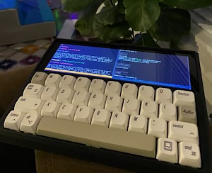
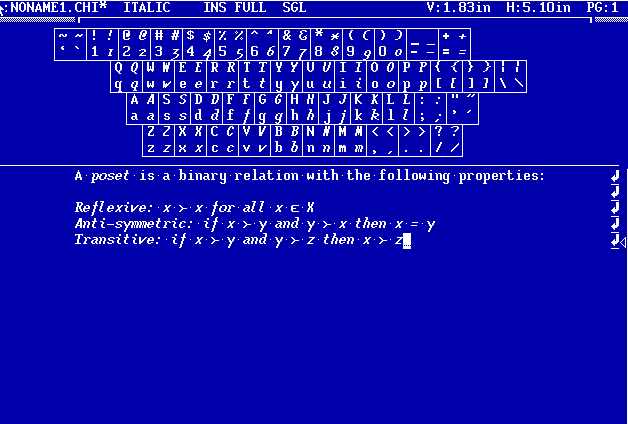
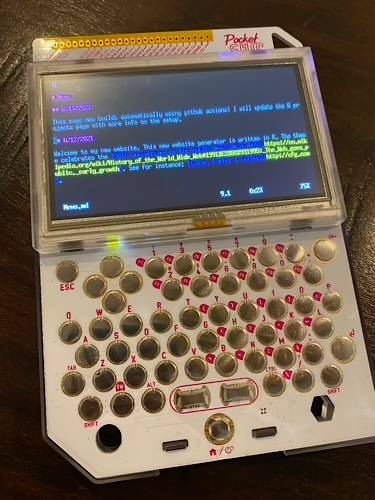

Wordle 214 4/6
⬛⬛🟨🟨⬛
⬛⬛🟩🟩🟩
⬛⬛🟩🟩🟩
🟩🟩🟩🟩🟩
Wordle 213 5/6
⬛⬛⬛🟨⬛
⬛🟩🟩⬛⬛
⬛🟩🟩⬛⬛
🟩🟩🟩⬛⬛
🟩🟩🟩🟩🟩
Wordle 212 3/6
🟨🟨🟨🟨⬛
🟩⬛🟩🟩🟩
🟩🟩🟩🟩🟩
Happy new year!
During winter break, I worked on a new project using my 3d printer. I attached a small keybaord to a Raspberry Pi 4 and 7.9" waveshare screen to create a tiny linux terminal. It is easy to cary around, energy efficeint, and powerful enough for working on papers, taking notes, and editing my webpage.

With another semester in the books (nearly), I want to thank all my students for great courses. This semester, I tried live-typing my lecture notes in both my undergraduate and PhD courses. I used Lyx (a frontend for latex) for typesetting. Lyx has the nice benefit of being able to hook into a background Mathematica instance to take derivatives, solve simple problems, and even do some more complex tasks on the fly right from the typeset expressions. It's an amazing system.
For me, this is the best-of-both-worlds of overhead slides and lecturing at the board. The typeset notes free students to listen rather than write (if they want), and Mathematica ensures we don't make any math mistakes (unless we want to). Typing live keeps the lecture interactive and keeps my pace appropriate. Plus, we can adapt, change our models, and experiment as we go.
I have a little work to do to clean up the notes, but I am happy to have a durable record of our notes for the future.
On another note, I've updated the look of the site with a new theme for winter. This one is reminiscent of hot chocolate and winter treats!
I’ve moved my site generation to a raspberry pi.
Previously, this site was generated in the cloud via a GitHub action. This required GitHub to fire up a virtual machine each time I updated my site. To speed up this process and expand my control over the generation, I’ve migrated this to an older pi 3, which provides more than enough power to handle this tiny site.
The time from updating my source repo to having live html updates is down to about a minute, and now I can incorporated more complex build workflows using other tools.
Andrew Dustan, Kristine Koutout and I have completed a new working papge: Reduction in Belief Elicitation.
I am on gopherspace at gopher://gopher.gregcleo.com:70/.
ChiWriter is a document editor for MsDos with built-in math fonts written by Cay Horstmann in 1986. It is available as abandonware on Cay Hortsmann's Website.
So blue…

Here is a snip of the “printed” Postscript output.
I am now on gopherspace at gopher://gopher.gregcleo.com:70/.
I am happy to announce VU Meets and Joins a new Theory/Experimental brown bag series at Vanderbilt. We meet every other Wednesday at 12pm in Calhoun 413B.
Our first meeting is tomorrow 10/20/21:
If you are interested in presenting to our group, reach out to me. We are open to outside speakers either in-person or via zoom.
I have added an updated working paper Subgame Perfect Coalition Formation (joint with Eugene Vorobeychik and Myrna Wooders).
In this paper, we analyze a dynamic coalition formation game, the “seqeuential proposer game”. A player proposes a coalition. The players in that coalition accpet or reject the proposal. As long as each player is able to make enough proposals, the equilibrium outcome is Pareto optimal.
I will be presenting “Minimal Experiments” (joint with PJ Healy) on 10/4/21 at The University of Tennessee.
Matching Soulmates has been accepted in the Journal of Public Economic Theory. The latest version of the paper is available here.

This page now builds automatically using github actions! This lets me update the page and add content from anywhere. In fact, I posted this update from my Pocket C.H.I.P.

Welcome to my new website. This new website generator is written in R. The themem which has since been updated for a new season, celebrates the 30th anniversary of the public World Wide Web. See for instance: Caine, Farber & Gordon.